CappyWorld
CappyWorld
From this web build
Gallery
These are captures of the CappyWorld game running in the browser. The first set is at Halloween dusk; the newest show broom flight, the sky display, and the rebuilt rail line. They are not stand-in art.
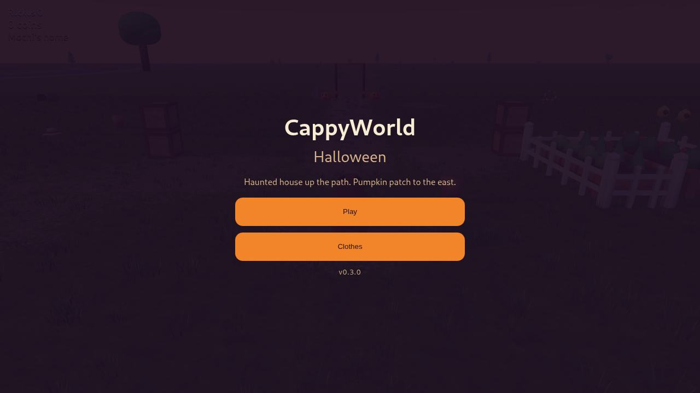
Title menu
The Halloween start screen. Play, or open clothes you have already found.
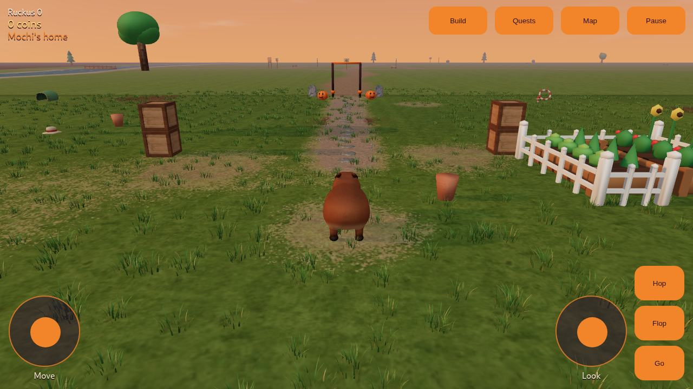
Mochi's home
The park you start in, with the ruckus score and the way north toward the village.
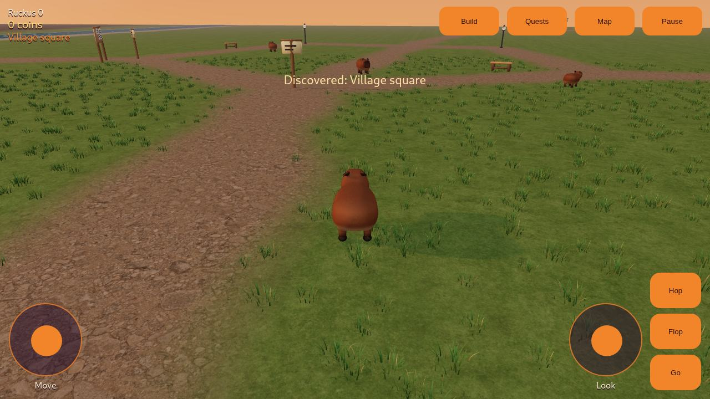
Village square
North of home. Neighbors, the notice board, and the lanes around the square.
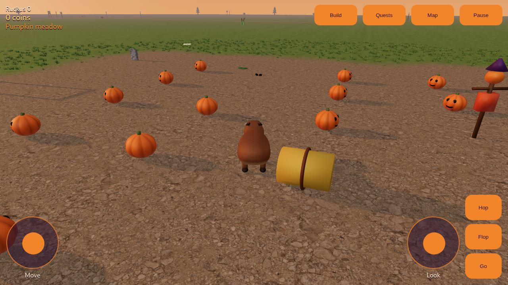
Pumpkin meadow
East of the park. Pumpkins and hay bales are there to knock over.
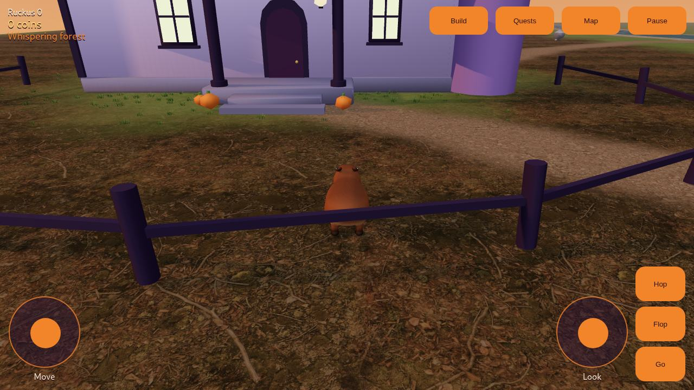
Whispering forest
Across the river, the haunted house. Step through the door when you want to go inside.
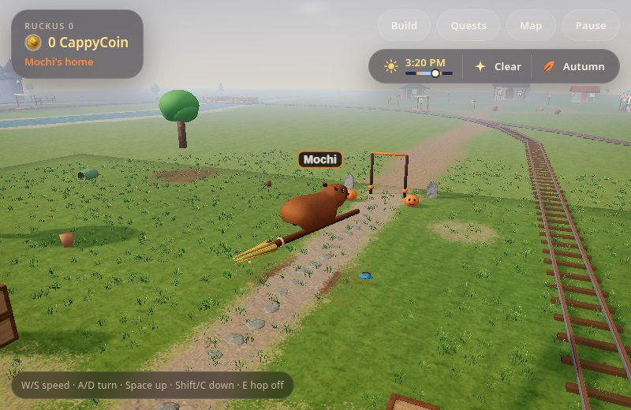
Broom flight
E hops on. W/S for speed, A/D to turn, Space to climb, Shift or C to come down.
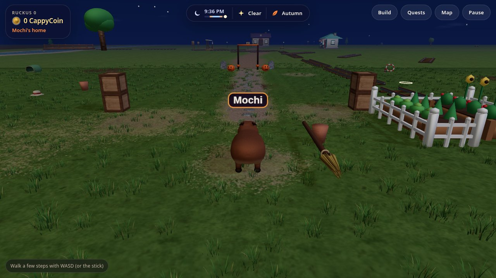
Night falls
The sky display at the top shows the moon after dusk, with the time, the weather, and the season.
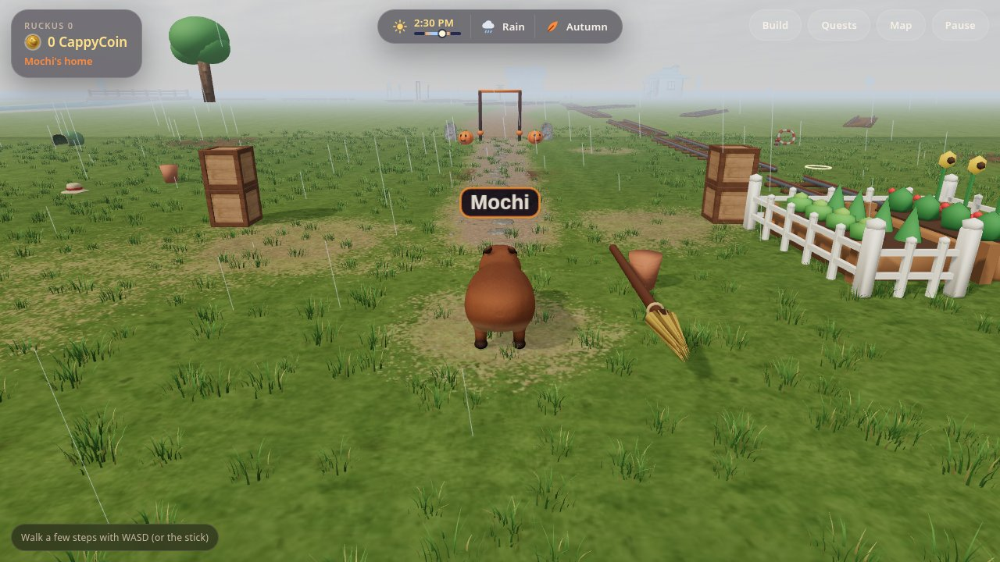
Rainy afternoon
The weather turns every so often: clear, cloudy, rain, storm, snow in winter, or fog.
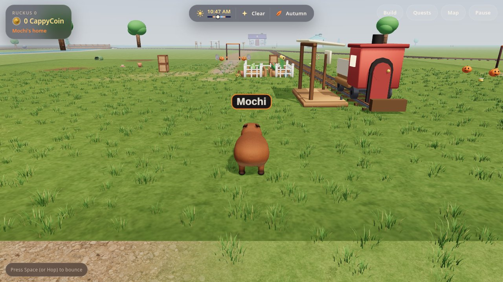
Home station
The train waits at the platform by home. Press E to pick a stop.
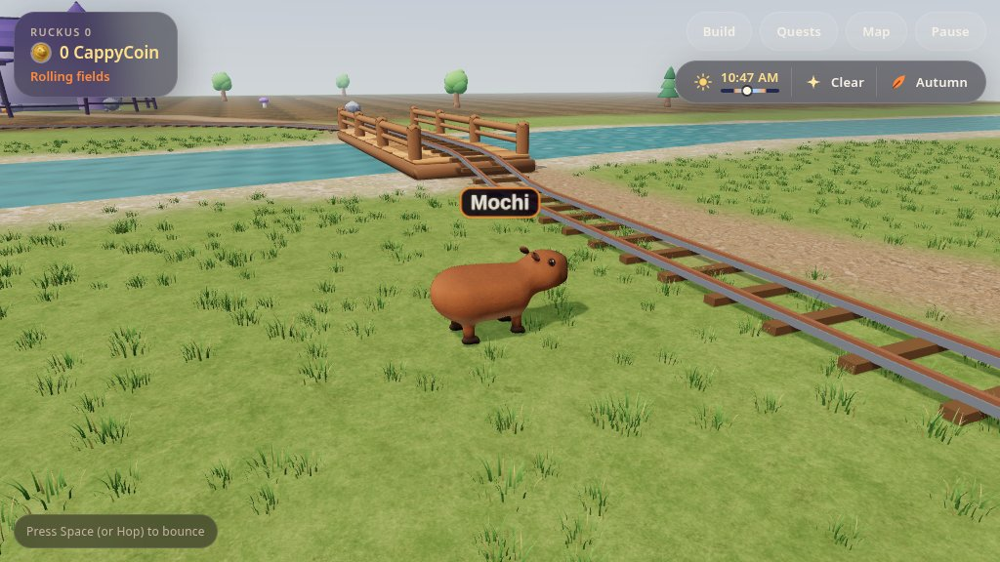
Rails to the river
One connected line links all six stations and crosses the river on the bridge.
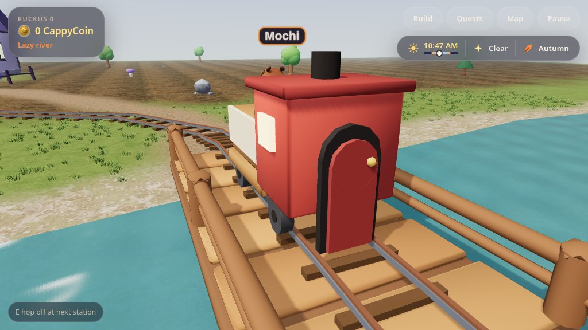
Over the bridge
Riding the train across the river. E hops off at the next station.